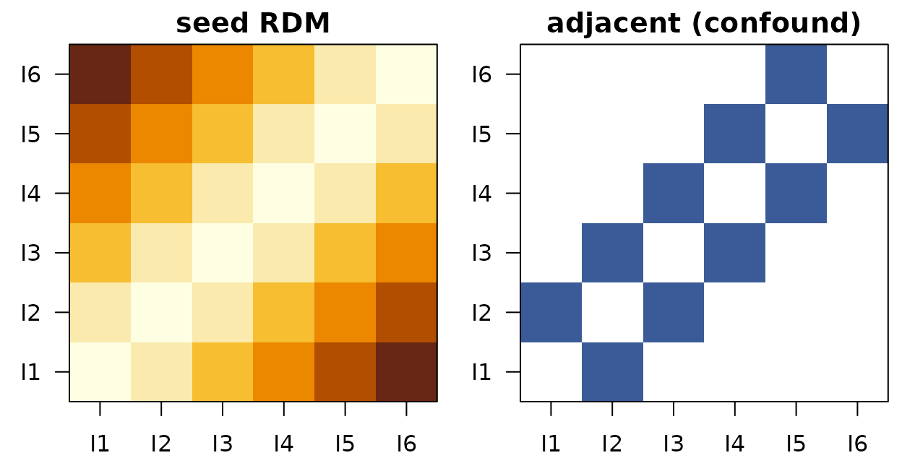

Representational Connectivity (ReNA-RC): repnet_model
Source:vignettes/repnet_model.Rmd
repnet_model.RmdReNA-RC is one of four cross-domain representational models in rMVPA. For the section’s terminology and how to choose between ReNA-RC, ReNA-Map, ReNA-RM, and REMAP-RRR, see the glossary at the top of
vignette("Naive_Cross_Decoding").
Overview
ReNA-RC quantifies the similarity between an ROI’s item-level representational geometry (its RDM) and a seed RDM. Optionally, nuisance RDMs (confounds) can be included, and the method reports both overall similarity and regression coefficients.
- Inputs: item key, seed RDM (K×K), optional confound RDMs (K×K)
- Output (per ROI): conn_raw (pearson/spearman similarity of vectorized RDMs), beta_* from multiple regression, optional semipartial correlations
Scientific motivation
Key question: Which brain regions share representational geometry with a seed region or computational model?
ReNA-RC is an extension of representational similarity analysis (RSA) that adds: 1. Confound control: Partial out nuisance similarity structures (temporal autocorrelation, low-level visual properties, task structure) 2. Functional connectivity in representational space: Like seed-based connectivity, but for similarity structures rather than timecourses 3. Multiple regression framework: Quantify unique variance explained by seed vs. confounds
Example scientific questions: - Which regions share hippocampal representational geometry controlling for temporal proximity of events? - Does posterior parietal cortex maintain the same categorical structure as prefrontal cortex during working memory? - Which visual areas correlate with CNN layer N representations after removing retinotopic confounds?
Confound control examples: - Temporal lag RDM: Control for autocorrelation (nearby trials are similar regardless of content) - Block RDM: Control for slow scanner drift or task-set effects - Low-level feature RDM: Isolate high-level representations by removing pixel-level similarity
Why confounds matter: Without confound control, you might find “connectivity” that’s really just: - Both regions encode temporal context (not content) - Both regions are sensitive to low-level features (not abstract categories) - Both regions share task-evoked hemodynamic responses
Comparison to alternatives: - vs. RSA without confounds: ReNA-RC isolates unique shared geometry - vs. Seed-based connectivity: ReNA-RC measures similarity structure (geometry) rather than amplitude covariation - vs. Searchlight RSA: ReNA-RC uses a fixed seed (hypothesis-driven) rather than whole-brain search
Data requirements
- A trial-level design with an item key to average trials into item prototypes.
- Seed/Confound RDMs labeled by item IDs (rownames/colnames). Unlabeled confounds are rejected to avoid silent misalignment.
What does a seed RDM look like?
A seed RDM is a K x K matrix of dissimilarities between
items. ReNA-RC asks how strongly each ROI’s representational geometry
resembles this seed (optionally controlling for confounds). The toy
example below uses a six-item ordinal seed: items closer in index are
predicted to be more similar.
K <- 6
items <- paste0("I", seq_len(K))
S <- as.matrix(stats::dist(seq_len(K)))
rownames(S) <- colnames(S) <- items
Adj <- (as.matrix(stats::dist(seq_len(K))) == 1) * 1
rownames(Adj) <- colnames(Adj) <- items
Left: seed RDM (an ordinal stack — small dissimilarity near the diagonal). Right: confound ‘adjacent’ RDM (1 for index-adjacent pairs, 0 otherwise). ReNA-RC measures the seed’s variance unique to each ROI’s geometry, after partialling out the confound.
Quick start: single ROI
library(rMVPA)
## Synthetic dataset
ds <- gen_sample_dataset(D = c(6,6,6), nobs = 60, response_type = "categorical",
data_mode = "image", blocks = 3, nlevels = 6)
K <- 6
items <- paste0("I", 1:K)
ds$design$train_design$ImageID <- factor(rep(items, length.out = nrow(ds$design$train_design)), levels = items)
## Seed RDM (labeled by items)
xi <- matrix(1:K, K, 1)
S <- as.matrix(dist(xi))
rownames(S) <- colnames(S) <- items
## Optional confound (e.g., adjacency in item index)
Adj <- (as.matrix(dist(xi)) == 1) * 1
rownames(Adj) <- colnames(Adj) <- items
## Build design helper and model spec
rcdes <- repnet_design(design = ds$design, key_var = ~ ImageID, seed_rdm = S,
confound_rdms = list(adjacent = Adj))
rcmod <- repnet_model(dataset = ds$dataset, design = ds$design, repnet_des = rcdes,
distfun = cordist(method = "pearson"), simfun = "pearson")
## Small ROI
vox <- which(ds$dataset$mask > 0)[1:50]
roi <- list(train_roi = neuroim2::series_roi(ds$dataset$train_data, vox), test_roi = NULL)
out <- process_roi(rcmod, roi, rnum = 1)
out$performance[[1]]Regional analysis
## Toy two-ROI mask (demo only)
region_vec <- as.vector(ds$dataset$mask)
inds <- which(region_vec > 0)
half <- length(inds) %/% 2
region_vec[inds[1:half]] <- 1L
region_vec[inds[(half+1):length(inds)]] <- 2L
region_vec[region_vec <= 0] <- 0L
region_mask <- neuroim2::NeuroVol(array(region_vec, dim = dim(ds$dataset$mask)), neuroim2::space(ds$dataset$mask))
# res <- run_regional(rcmod, region_mask) # disabled for vignette speed
# head(res$performance_table)Interpreting outputs
- conn_raw: simple RSA-style similarity (correlation) between ROI and seed RDMs.
- beta_*: coefficients from regressing ROI RDM on seed and confound vectors.
- sp_*: optional semipartial correlations when available.
Notes and pitfalls
- Label alignment is strict: confound RDMs must have item labels covering the intersected items; otherwise the ROI returns an error with a clear message.
- Small K: results are flagged as potentially unstable for K < 5.
- NA connectivity: if the correlation has no complete pairs, the result warns and sets conn_raw = NA.
See also
-
vignette("repmap_model")– Representational Mapping (ReNA-Map) -
vignette("repmed_model")– Representational Mediation (ReNA-RM) -
vignette("Naive_Cross_Decoding")– Naive cross-decoding baseline